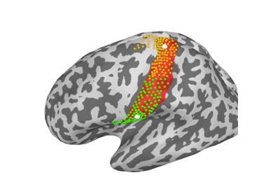

Reproducing paper results¶


Analyze experimental MEG data concerning auditory evoked field
Analyze experimental MEG data concerning auditory evoked field

Functional connectivity properties of the MEG-informed parcellation
Functional connectivity properties of the MEG-informed parcellation

Functional properties of the MEG-informed parcellation
Functional properties of the MEG-informed parcellation
Structural properties of the MEG-informed parcellation
Structural properties of the MEG-informed parcellation